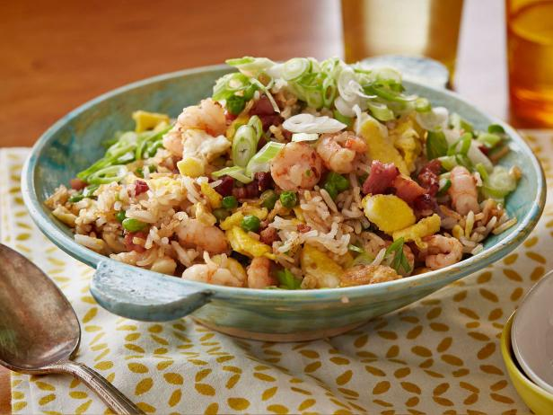
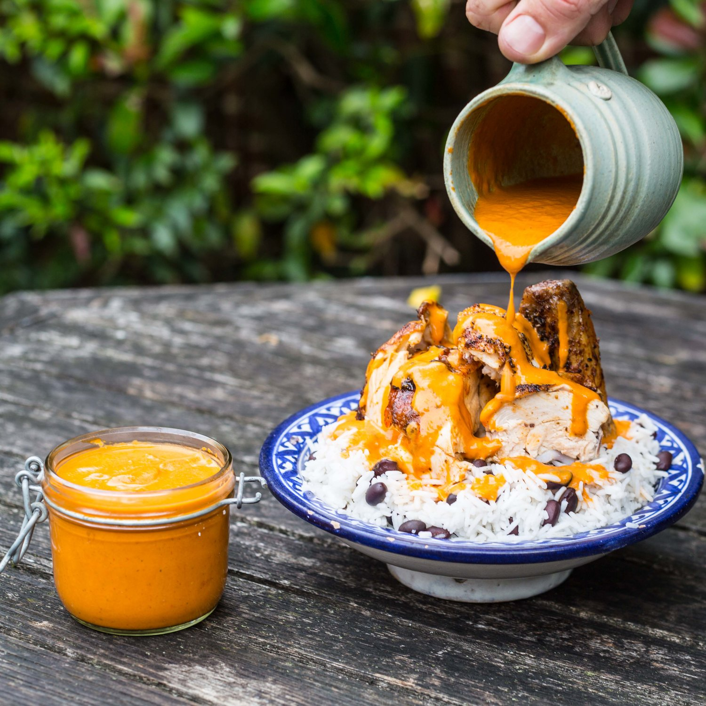

4 (6- to 8- oz) boneless, skinless chicken breasts, trimmed
Salt and Pepper
1 Tbsp vegetable oil
Directions
Adjust oven rack to upper-middle position and heat oven to 325 deg F (160 deg C).
Whisk ketchup, molasses, vinegar, Worcestershire, mustard, maple syrup, chili powder, and cayenne together in a bowl.
Pat chicken dry with paper towels and season with salt and pepper.
Heat oil in 12-inch oven-safe skillet (such as a cast iron skillet) over medium-high heat until just smoking. Lightly brown chicken on both sides, about 2 minutes per side; transfer to plate.
Pour off all oil left in skillet and add BBQ sauce, scraping up any browned bits. Bring to simmer over medium heat and cook, stirring often, until sauce is thick and glossy, about 4 minutes.
Off heat, return chicken to skillet and coat well with sauce. Spoon extra sauce over each piece to create a thick, juicy coating. Transfer skillet to oven and bake chicken to 130 deg F, 10 to 14 minutes.
Using hot pads (skillet will be hot!!) remove skillet from oven. Adjust oven rack to 5 inches from broiler element and heat broiler. Broil chicken to 160 deg F, 5 to 10 minutes.
Transfer chicken to platter and let rest for 5 minutes. Stir sauce left in skillet to combine and transfer to bowl. Serve chicken and sauce separately.
Pork Fried Rice

Ingredients
1/4 cup oyster sauce
1 tablespoon soy sauce
3 1/2 tablespoons peanut oil or vegetable oil
2 large eggs , beaten lightly
8 ounces small shrimp , peeled and deveined
1 cup frozen peas (preferably baby peas), thawed
1/2 ounce dried shitake mushrooms (5 to 6 medium), rehydrated in 1 cup hot water until softened, about 15 minutes, then drained, trimmed of stems, and sliced into 1/4-inch strips
2 Chinese sausages (lop cheong) (about 4 ounces), halved lengthwise and cut crosswise into 1/2-inch pieces, or, 8 ounces sliced smoked ham, cut into 1/2-inch pieces (optional)
4 ounces Chinese roast pork , cut into 1/2-inch chunks
2 medium cloves garlic , minced (about 2 teaspoons)
5 cups cooked white rice (cold), large clumps broken up with fingers
5 medium scallions , sliced thin (about 1/2 cup)
Directions
Combine oyster sauce and soy sauce in small bowl; set aside.
Heat 12-inch nonstick skillet over medium heat until hot, about 2 minutes. Add 1 1/2 teaspoons oil and swirl to coat pan bottom. Add eggs and cook without stirring, until they just begin to set, about 20 seconds, then scramble and break into small pieces with wooden spoon; continue to cook, stirring constantly, until eggs are cooked through but not browned, about 1 minute longer. Transfer eggs to small bowl and set aside.
Return skillet to medium heat and heat until hot, about 1 minute; add 1 1/2 teaspoons oil and swirl to coat pan bottom. Add shrimp and cook, stirring constantly, until opaque and just cooked through, about 30 seconds. Transfer to bowl with eggs and set aside.
Return skillet to burner, increase heat to high and heat skillet until hot, about 2 minutes; add remaining 2 1/2 tablespoons oil and swirl to coat pan bottom. Add peas, mushrooms, sausage or ham, and pork; cook, stirring constantly, for 1 minute. Stir in garlic and cook until fragrant, about 30 seconds. Add rice and oyster sauce mixture; cook, stirring constantly and breaking up rice clumps, until mixture is heated through, about 3 minutes. Add eggs, shrimp, and scallions; cook, stirring constantly, until heated through, about 1 minute. Serve immediately.
1 clove garlic, minced or pressed through garlic press (about 1 teaspoon)
2 tablespoons mirin (or white wine)
1/2 teaspoon cornstarch
Directions
Adjust oven rack to 8 inches below broiler; heat broiler on high.
Season thighs with salt and pepper on both sides, then place on broiler pan, folding edges under to make a neat, even packet (They should be fairly thin.)
Broil thighs for 8-14 minutes, rotating halfway through cooking. Thighs are done when they’re browned and a thermometer registers 175° when inserted into the thickest part of the thigh.
While chicken cooks, make the sauce. In a saucepan, combine soy sauce, sugar, ginger, and garlic. In a separate small bowl, mix together mirin and cornstarch. Stir cornstarch mixture into soy sauce mixture and bring to a boil over medium-high heat, stirring occasionally. Turn heat down to medium low and simmer sauce for 4 minutes, or until it becomes slightly thickened.
Remove chicken from oven; let rest 2-3 minutes. Slice each thigh into strips, serve over rice, and drizzle with teriyaki sauce. Sprinkle with chopped green onions.
Peri Peri Chicken

Ingredients
1 Chicken
2 Bay Leaves
4 tsp Smoked Paprika
3 tsp Dried Oregano
3 Red Chillies
1.5 Tbs Red Wine Vinegar
2 Lemons
3 cloves garlic, grated
1 Red Onion
2 Red Peppers
Basmati Rice
Olvie oil
Salt & Pepper
Directions
Preheat oven to 350°F
Place chicken in a baking tray. Cover with olive oil. Add two teaspoons of smoked paprika and a teaspoon of dried oregano. Rub it in. Place chicken in over for 30 minutes
Cut 2 peppers and 1 red onion into chunks and add to a baking tray. Cut a lemon in half. Add the lemon halves, face side down, and drizzle olive oil over everything. Place the tray in the oven for 40 minutes.
After 30 minutes, remove the chicken, and baste it in the juices. Place it back in the oven for anther 30 minutes
When the vegetables and lemon are charred and soft, remove from oven. Place the onion and the peppers into a blender. Squeeze out the juice from the roasted lemons. Add three red chillies. Then, add 3 cloves of grated garlic, the zest and juice of a fresh lemon, 2 teaspoons of smoked paprika, two teaspoons of dried oregano, a tablespoon and a half of red wine vinegar, a tablespoon of olive oil and a good pinch of salt and pepper. Blitz until you have a smooth orange sauce
Pour the sauce into a frying pan, and add two bay leaves. Allow the sauce to simmer for 3-4 minutes so the bay can infuse
While the sauce is summering, take the chicken out of the oven. Baste it in its juices and remove from the tray. Let sit for 5 minutes before carving
Serve the chicken on a bed of basmati rice and pour the sauce over the top